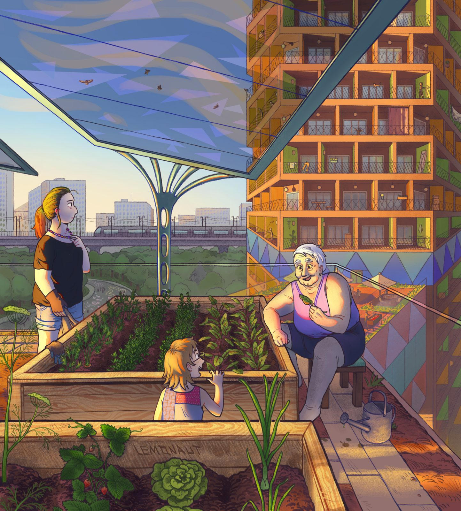

References / Illustration / 406
A Solarpunk tower
Three generations tend raised beds on the roof terrace of a planted residential tower, under a canopy of solar panels on a branching steel column.
- Source
- Wikimedia Commons: File:A Solarpunk tower.png
- Creator
- The.lemonaut.ukr, in collaboration with Scan101 (Scandinavian101)
- Made
- 2024
- Style
- Solarpunk (agent-proposed, not yet reviewed by a person)
- Moods
- Hopeful, communal, verdant, sunlit
- Evidence
- Downloaded and inspected the Commons file (original 3000 × 3329 px PNG, viewed at 1442 × 1600 px).
- Reviewed
- Rights
- Open license, stored. License: CC-BY-4.0. Rights policy

Context
The uploader dates the file 4 September 2024 and says it was made in collaboration with Scan101 (Scandinavian101). Commons lists it in the categories Solarpunk, City farms, Rooftop gardens, and Art by Commons users. Commons file page.
Observed
- In the foreground, wooden raised beds hold carrots, beet, lettuce, strawberries, and dill. A watering can stands on a tiled path.
- An older woman sits on a stool and holds a leaf, a child looks over the bed, and a younger woman in gardening gloves looks out over the city.
- Overhead, angled glass solar panels sit on a steel column that branches like a tree and has round holes along its trunk.
- At right, a tall tower has open orange balconies with plants and laundry. Its base is clad in a mosaic of blue, violet, green, and gold triangles.
- Behind, a park, a train on a viaduct, and pale tower blocks stand under a light blue sky.
- The drawing has thin dark outlines, flat colour with soft painted shading, and a grain texture. The light is warm and low, with orange tones on the left side of each figure.
Why it belongs
The image joins all the diagnostic traits of the style: plants, visible renewables, public transport, and daily life. The tree-shaped solar column is the style’s typical hybrid of organic form and technology.
The faceted mosaic on the tower base plays the role that stained glass plays in other solarpunk art. The warm evening palette shifts the style’s gold toward orange.
Borrow
Put a practical task (gardening, repair) in the foreground and the sustainable city in the background, so the scene reads as lived-in.
Draw infrastructure with organic structure, for example a support column that branches like a tree.
Measured
Machine-extracted by tools/image-traits.py on . Full measurement.
- Mean chroma
- 0.2
- Palette
- #5f3d3a 5%
- #6d504a 5%
- #895f46 5%
- #72453c 5%
- #918d93 4%
- #657fb0 4%
- #eda959 4%
- #3d292c 4%

